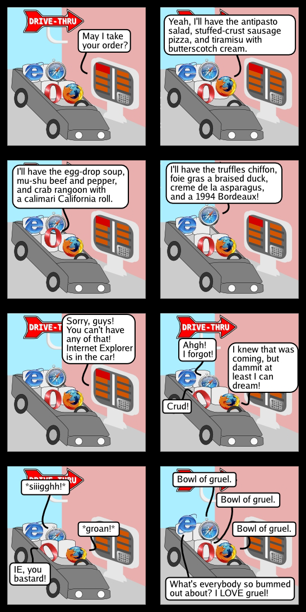

Origins of the Internet
- ARPANET introduced by DARPA in 1960s [pdf]
- A national network for crisis communication
- Shared mainframe resources
- Development of communication protocols (TCP/IP)
- Gave way to NSFNet in 1980s
Origins of the Web
- Proposed by (Sir) Tim-Berners Lee, a computer scientist at CERN, in 1989
- Based on the concept of hypertext — the ability to access multiple levels of information through links
- Unveiled in 1991 on USENET
- Utilizes the connections provided by the Internet
World Wide Web
- URL
- uniform resource locator
- URI
- uniform resource identifier
- HTML
- hypertext markup language; structures content for the Web
- HTTP
- hypertext transfer protocol; how clients, servers exchange information
The Web grows up
- Mosaic browser introduced by NCSA's Marc Andreessen in January 1993
- First browser to support inline images
- Software developed for Windows, Mac
- Web adoption grows
- November 1992: 26 web sites
- June 1993: 130 sites
- December 1993: 632 sites
The Browser Wars
- 1994: Netscape introduced
- 1995: Internet Explorer introduced
- Both included proprietary tags, scripting languages for coding web sites
- Resulted in campaigns to standardize the web
Web Standards
- Developed by the W3C to ensure compatibility across browsers, devices
- Assures the web is backward and foward compatible
- Current standards: HTML5, CSS3, ECMAScript 5 (a.k.a Javascript)
- W3C Validator can help root out non-standard code
Understanding Browsers
- Each browser has a different 'rendering' engine
- Most modern browsers follow standards
- Standards are usually implemented as they are approved by the W3C
- But ... which feature and how quickly it gets added to a browser depends on its creator
Four browsers go to the drive-thru...

Browsers by Market Share
- Chrome
- Internet Explorer
- Firefox
- Safari
- Opera